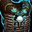
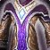
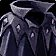

Robe of the Shadow Council
Robe of the Shadow CouncilRobe of the Shadow Council236 armor, 37 stamina, 36 intellect, 26 spirit, 73 spell damage, 73 healing power, 28 spell crit rating (1.27%)Drops from Teron Gorefiend, Black Temple
236 armor, 37 stamina, 36 intellect, 26 spirit, 73 spell damage, 73
healing power, 28 spell crit rating (1.27%)
Drops from Teron Gorefiend, Black Temple
What influencers say
Zatar (Classic Wow Builds)
Zatar (Classic Wow Builds) · 72:26
67k views
Argues against it
Zatar dismisses it in a sentence as a bad item to be handed to whoever
wants it.
Showing all 6 spec cards.
No specs are selected, so no cards are showing. Use Show every spec to bring all of them back.
Elemental Shaman
Prioritynot yet decided
Constraints
Spell hit cap16%spells
Elemental Precision-6%
Nature's Guidance-3%
Totem of Wrath-3%
Gear needs4%
Entry set4.1%clear
by 0.1%
Tier set, Tier 6 head and shoulder and
chest and hands8.2%clear by 4.1%
No crit cap.
Part of this spec's damage is periodic, and periodic damage cannot crit
in this patch, so crit reaches less of its output than the character
sheet suggests.
Global cooldown floor at 50% spell haste, which nothing rostered reaches
from gear this phase.
Delta
Robe of the Shadow CouncilRobe of the Shadow Council236 armor, 37 stamina, 36 intellect, 26 spirit,
73 spell damage, 73 healing power, 28 spell crit rating
(1.27%)Drops from Teron Gorefiend,
Black Temple in Elemental
Shaman terms EPV
105.28
| Stat | Over Tier 6, Black Temple Skyshatter BreastplateSkyshatter Breastplate1022 armor, 42 stamina, 41 intellect, 62 spell damage, 62 healing power, 17 spell hit rating (1.35%), 27 spell crit rating (1.22%)Sockets blue, yellow, yellow · Socket bonus 5 healing power, 5 spell damageTier set piece, Skyshatter Regalia. Bought with a token, never a raid drop EPV 126.00 | Over best pre-phase off-piece, Serpentshrine Cavern Vestments of the Sea-WitchVestments of the Sea-Witch231 armor, 28 stamina, 28 intellect, 57 spell damage, 57 healing power, 27 spell hit rating (2.14%), 31 spell crit rating (1.40%)Sockets yellow, yellow, blue · Socket bonus 5 healing power, 5 spell damageDrops from Lady Vashj, Serpentshrine Cavern EPV 122.84 | Over best Phase 3 off-piece, Hyjal Summit Robes of RhoninRobes of Rhonin253 armor, 55 stamina, 38 intellect, 81 spell damage, 81 healing power, 27 spell hit rating (2.14%), 24 spell crit rating (1.09%)Drops from Archimonde, Mount Hyjal EPV 119.92 | Over Tier 5, Tempest Keep Cataclysm ChestpieceCataclysm Chestpiece934 armor, 37 stamina, 28 intellect, 55 spell damage, 55 healing power, 24 spell crit rating (1.09%)Sockets blue, yellow, yellow · Socket bonus 5 healing power, 5 spell damageTier set piece, Cataclysm Regalia. Bought with a token, never a raid drop EPV 107.50 | ||||
|---|---|---|---|---|---|---|---|---|
| Change | Converted | Change | Converted | Change | Converted | Change | Converted | |
| armor | -786 | +5 | -17 | -698 | ||||
| stamina | -5 | +9 | -18 | 0 | ||||
| intellect | -5 | -0.06% spell crit | +8 | +0.10% spell crit | -2 | -0.03% spell crit | +8 | +0.10% spell crit |
| spirit | +26 | +26 | +26 | +26 | ||||
| spell damage | +11 | +16 | -8 | +18 | ||||
| healing power | +11 | +16 | -8 | +18 | ||||
| spell hit | -17 | -1.35% | -27 | -2.14% | -27 | -2.14% | 0 | |
| spell crit | +1 | +0.05% | -3 | -0.14% | +4 | +0.18% | +4 | +0.18% |
| Stat Highlights (Total Change) | -0.02% spell crit +11 spell damage +11 healing power -1.35% spell hit | -0.04% spell crit +16 spell damage +16 healing power -2.14% spell hit | +0.16% spell crit -8 spell damage -8 healing power -2.14% spell hit | +0.28% spell crit +18 spell damage +18 healing power | ||||
Balance Druid
Prioritynot yet decided
Constraints
Spell hit cap16%spells
Balance of Power-4%
Totem of Wrath-3%
Gear needs9%
Entry set8.5%short
by 0.6%
Tier set, Tier 6 head and shoulder and
chest and hands9.4%clear by 0.4%
The entry set holds four Tier 5 pieces, at the head, the shoulder, the
chest and the hands, which is the Tier 5 four-piece, so either token
breaks it; both tokens are raw EPV gains, and this set trades those four
for four Tier 6 pieces, at the head, the shoulder, the chest and the
hands.
No crit cap.
Part of this spec's damage is periodic, and periodic damage cannot crit
in this patch, so crit reaches less of its output than the character
sheet suggests.
Global cooldown floor at 50% spell haste, which nothing rostered reaches
from gear this phase.
Delta
Robe of the Shadow CouncilRobe of the Shadow Council236 armor, 37 stamina, 36 intellect, 26 spirit,
73 spell damage, 73 healing power, 28 spell crit rating
(1.27%)Drops from Teron Gorefiend,
Black Temple in Balance
Druid terms EPV
112.32
| Stat | Over Tier 6, Black Temple
 Thunderheart VestThunderheart Vest459 armor, 42 stamina, 40 intellect, 27 spirit, 62 spell damage, 62 healing power, 17 spell hit rating (1.35%), 25 spell crit rating (1.13%)Sockets blue, blue, yellow · Socket bonus 5 healing power, 5 spell damageTier set piece, Thunderheart Regalia. Bought with a token, never a raid drop EPV 157.78 |
Over best pre-phase off-piece, Serpentshrine Cavern Vestments of the Sea-WitchVestments of the Sea-Witch231 armor, 28 stamina, 28 intellect, 57 spell damage, 57 healing power, 27 spell hit rating (2.14%), 31 spell crit rating (1.40%)Sockets yellow, yellow, blue · Socket bonus 5 healing power, 5 spell damageDrops from Lady Vashj, Serpentshrine Cavern EPV 154.64 | Over Tier 5, Tempest Keep Nordrassil ChestpieceNordrassil Chestpiece419 armor, 36 stamina, 32 intellect, 25 spirit, 54 spell damage, 54 healing power, 19 spell hit rating (1.51%), 17 spell crit rating (0.77%)Sockets blue, blue, yellow · Socket bonus 4 spell crit ratingTier set piece, Nordrassil Regalia. Bought with a token, never a raid drop EPV 143.66 | Over best Phase 3 off-piece, Hyjal Summit Robes of RhoninRobes of Rhonin253 armor, 55 stamina, 38 intellect, 81 spell damage, 81 healing power, 27 spell hit rating (2.14%), 24 spell crit rating (1.09%)Drops from Archimonde, Mount Hyjal EPV 142.24 | ||||
|---|---|---|---|---|---|---|---|---|
| Change | Converted | Change | Converted | Change | Converted | Change | Converted | |
| armor | -223 | +5 | -183 | -17 | ||||
| stamina | -5 | +9 | +1 | -18 | ||||
| intellect | -4 | -0.05% spell crit · -1 spell damage · -1 healing power | +8 | +0.10% spell crit · +2 spell damage · +2 healing power | +4 | +0.05% spell crit · +1 spell damage · +1 healing power | -2 | -0.03% spell crit · -0.50 spell damage · -0.50 healing power |
| spirit | -1 | +26 | +1 | +26 | ||||
| spell damage | +11 | +16 | +19 | -8 | ||||
| healing power | +11 | +16 | +19 | -8 | ||||
| spell hit | -17 | -1.35% | -27 | -2.14% | -19 | -1.51% | -27 | -2.14% |
| spell crit | +3 | +0.14% | -3 | -0.14% | +11 | +0.50% | +4 | +0.18% |
| Stat Highlights (Total Change) | +0.09% spell crit +10 spell damage +10 healing power -1.35% spell hit | -0.04% spell crit +18 spell damage +18 healing power -2.14% spell hit | +0.55% spell crit +20 spell damage +20 healing power -1.51% spell hit | +0.16% spell crit -8.50 spell damage -8.50 healing power -2.14% spell hit | ||||
Arcane Mage
Prioritynot yet decided
Constraints
Spell hit cap16%spells
Arcane Focus-10%
Gear needs6%
Entry set6.6%clear
by 0.6%
Tier set, Tier 6 legs6.1%clear
by 0.1%
No crit cap.
Global cooldown floor at 50% spell haste, which nothing rostered reaches
from gear this phase.
Delta
Robe of the Shadow CouncilRobe of the Shadow Council236 armor, 37 stamina, 36 intellect, 26 spirit,
73 spell damage, 73 healing power, 28 spell crit rating
(1.27%)Drops from Teron Gorefiend,
Black Temple in Arcane
Mage terms EPV
79.72
| Stat | Over Tier 6, Black Temple
 Robes of the TempestRobes of the Tempest244 armor, 36 stamina, 39 intellect, 31 spirit, 62 spell damage, 62 healing power, 13 spell hit rating (1.03%), 23 spell crit rating (1.04%)Sockets yellow, yellow, blue · Socket bonus 5 healing power, 5 spell damageTier set piece, Tempest Regalia. Bought with a token, never a raid drop EPV 98.00 |
Over best pre-phase off-piece, Serpentshrine Cavern Vestments of the Sea-WitchVestments of the Sea-Witch231 armor, 28 stamina, 28 intellect, 57 spell damage, 57 healing power, 27 spell hit rating (2.14%), 31 spell crit rating (1.40%)Sockets yellow, yellow, blue · Socket bonus 5 healing power, 5 spell damageDrops from Lady Vashj, Serpentshrine Cavern EPV 87.17 | Over Tier 5, Tempest Keep
 Robes of TirisfalRobes of Tirisfal223 armor, 30 stamina, 35 intellect, 20 spirit, 55 spell damage, 55 healing power, 19 spell crit rating (0.86%)Sockets yellow, yellow, blue · Socket bonus 5 healing power, 5 spell damageTier set piece, Tirisfal Regalia. Bought with a token, never a raid drop EPV 84.20 |
Over best Phase 3 off-piece, Hyjal Summit Robes of RhoninRobes of Rhonin253 armor, 55 stamina, 38 intellect, 81 spell damage, 81 healing power, 27 spell hit rating (2.14%), 24 spell crit rating (1.09%)Drops from Archimonde, Mount Hyjal EPV 83.88 | ||||
|---|---|---|---|---|---|---|---|---|
| Change | Converted | Change | Converted | Change | Converted | Change | Converted | |
| armor | -8 | +5 | +13 | -17 | ||||
| stamina | +1 | +9 | +7 | -18 | ||||
| intellect | -3 | -0.04% spell crit · -0.86 spell damage | +8 | +0.12% spell crit · +2.30 spell damage | +1 | +0.01% spell crit · +0.29 spell damage | -2 | -0.03% spell crit · -0.57 spell damage |
| spirit | -5 | +26 | +6 | +26 | ||||
| spell damage | +11 | +16 | +18 | -8 | ||||
| healing power | +11 | +16 | +18 | -8 | ||||
| spell hit | -13 | -1.03% | -27 | -2.14% | 0 | -27 | -2.14% | |
| spell crit | +5 | +0.23% | -3 | -0.14% | +9 | +0.41% | +4 | +0.18% |
| Stat Highlights (Total Change) | +0.18% spell crit +10.14 spell damage +11 healing power -1.03% spell hit | -0.02% spell crit +18.30 spell damage +16 healing power -2.14% spell hit | +0.42% spell crit +18.29 spell damage +18 healing power | +0.15% spell crit -8.57 spell damage -8 healing power -2.14% spell hit | ||||
Shadow Priest
Prioritynot yet decided
Constraints
Spell hit cap16%spells
Shadow Focus-10%
Gear needs6%
Entry set7.3%clear
by 1.3%
Tier set, Tier 6 head and shoulder and
chest and hands7.9%clear by 1.9%
No crit cap.
Part of this spec's damage is periodic, and periodic damage cannot crit
in this patch, so crit reaches less of its output than the character
sheet suggests.
Global cooldown floor at 50% spell haste, which nothing rostered reaches
from gear this phase.
Delta
Robe of the Shadow CouncilRobe of the Shadow Council236 armor, 37 stamina, 36 intellect, 26 spirit,
73 spell damage, 73 healing power, 28 spell crit rating
(1.27%)Drops from Teron Gorefiend,
Black Temple in Shadow
Priest terms EPV
83.12
| Stat | Over best pre-phase off-piece, Serpentshrine Cavern Vestments of the Sea-WitchVestments of the Sea-Witch231 armor, 28 stamina, 28 intellect, 57 spell damage, 57 healing power, 27 spell hit rating (2.14%), 31 spell crit rating (1.40%)Sockets yellow, yellow, blue · Socket bonus 5 healing power, 5 spell damageDrops from Lady Vashj, Serpentshrine Cavern EPV 121.07 | Over Tier 6, Black Temple Shroud of AbsolutionShroud of Absolution244 armor, 36 stamina, 39 intellect, 61 spell damage, 61 healing power, 20 spell hit rating (1.58%), 21 spell crit rating (0.95%)Sockets yellow, yellow, blue · Socket bonus 5 healing power, 5 spell damageTier set piece, Absolution Regalia. Bought with a token, never a raid drop EPV 118.57 | Over Tier 5, Tempest Keep Shroud of the AvatarShroud of the Avatar223 armor, 30 stamina, 35 intellect, 20 spirit, 55 spell damage, 55 healing power, 19 spell hit rating (1.51%)Sockets yellow, yellow, blue · Socket bonus 5 healing power, 5 spell damageTier set piece, Avatar Regalia. Bought with a token, never a raid drop EPV 109.98 | Over best Phase 3 off-piece, Hyjal Summit Robes of RhoninRobes of Rhonin253 armor, 55 stamina, 38 intellect, 81 spell damage, 81 healing power, 27 spell hit rating (2.14%), 24 spell crit rating (1.09%)Drops from Archimonde, Mount Hyjal EPV 108.43 | ||||
|---|---|---|---|---|---|---|---|---|
| Change | Converted | Change | Converted | Change | Converted | Change | Converted | |
| armor | +5 | -8 | +13 | -17 | ||||
| stamina | +9 | +1 | +7 | -18 | ||||
| intellect | +8 | +0.10% spell crit | -3 | -0.04% spell crit | +1 | +0.01% spell crit | -2 | -0.03% spell crit |
| spirit | +26 | +26 | +6 | +26 | ||||
| spell damage | +16 | +12 | +18 | -8 | ||||
| healing power | +16 | +12 | +18 | -8 | ||||
| spell hit | -27 | -2.14% | -20 | -1.58% | -19 | -1.51% | -27 | -2.14% |
| spell crit | -3 | -0.14% | +7 | +0.32% | +28 | +1.27% | +4 | +0.18% |
| Stat Highlights (Total Change) | -0.04% spell crit +16 spell damage +16 healing power -2.14% spell hit | +0.28% spell crit +12 spell damage +12 healing power -1.58% spell hit | +1.28% spell crit +18 spell damage +18 healing power -1.51% spell hit | +0.16% spell crit -8 spell damage -8 healing power -2.14% spell hit | ||||
Affliction Warlock
Prioritynot yet decided
Constraints
Spell hit cap16%spells
Totem of Wrath-3%
Gear needs13.1%
The Suppression talent does not cover this spec's filler spell, so none
of it counts.
Entry set16.1%clear
by 3%
Tier set, Tier 6 head and shoulder and
hands18.3%clear by 5.2%
No crit cap.
Part of this spec's damage is periodic, and periodic damage cannot crit
in this patch, so crit reaches less of its output than the character
sheet suggests.
Global cooldown floor at 50% spell haste, which nothing rostered reaches
from gear this phase.
Delta
Robe of the Shadow CouncilRobe of the Shadow Council236 armor, 37 stamina, 36 intellect, 26 spirit,
73 spell damage, 73 healing power, 28 spell crit rating
(1.27%)Drops from Teron Gorefiend,
Black Temple in
Affliction Warlock terms EPV 95.39
| Stat | Over best pre-phase off-piece, Serpentshrine Cavern Vestments of the Sea-WitchVestments of the Sea-Witch231 armor, 28 stamina, 28 intellect, 57 spell damage, 57 healing power, 27 spell hit rating (2.14%), 31 spell crit rating (1.40%)Sockets yellow, yellow, blue · Socket bonus 5 healing power, 5 spell damageDrops from Lady Vashj, Serpentshrine Cavern EPV 155.85 | Over Tier 6, Black Temple Robe of the MaleficRobe of the Malefic244 armor, 66 stamina, 29 intellect, 63 spell damage, 63 healing power, 28 spell hit rating (2.22%)Sockets yellow, yellow, blue · Socket bonus 5 healing power, 5 spell damageTier set piece, Malefic Raiment. Bought with a token, never a raid drop EPV 144.37 | Over best Phase 3 off-piece, Hyjal Summit Robes of RhoninRobes of Rhonin253 armor, 55 stamina, 38 intellect, 81 spell damage, 81 healing power, 27 spell hit rating (2.14%), 24 spell crit rating (1.09%)Drops from Archimonde, Mount Hyjal EPV 140.28 | Over Tier 5, Tempest Keep Robe of the CorruptorRobe of the Corruptor223 armor, 48 stamina, 33 intellect, 55 spell damage, 55 healing power, 23 spell hit rating (1.82%)Sockets yellow, yellow, yellow · Socket bonus 5 healing power, 5 spell damageTier set piece, Corruptor Raiment. Bought with a token, never a raid drop EPV 132.30 | ||||
|---|---|---|---|---|---|---|---|---|
| Change | Converted | Change | Converted | Change | Converted | Change | Converted | |
| armor | +5 | -8 | -17 | +13 | ||||
| stamina | +9 | -29 | -18 | -11 | ||||
| intellect | +8 | +0.10% spell crit | +7 | +0.09% spell crit | -2 | -0.02% spell crit | +3 | +0.04% spell crit |
| spirit | +26 | +26 | +26 | +26 | ||||
| spell damage | +16 | +10 | -8 | +18 | ||||
| healing power | +16 | +10 | -8 | +18 | ||||
| spell hit | -27 | -2.14% | -28 | -2.22% | -27 | -2.14% | -23 | -1.82% |
| spell crit | -3 | -0.14% | +28 | +1.27% | +4 | +0.18% | +28 | +1.27% |
| Stat Highlights (Total Change) | -0.04% spell crit +16 spell damage +16 healing power -2.14% spell hit | +1.35% spell crit +10 spell damage +10 healing power -2.22% spell hit | +0.16% spell crit -8 spell damage -8 healing power -2.14% spell hit | +1.30% spell crit +18 spell damage +18 healing power -1.82% spell hit | ||||
Destruction Warlock
Prioritynot yet decided
Constraints
Spell hit cap16%spells
Totem of Wrath-3%
Gear needs13.1%
No hit talent exists for this spec.
Entry set13.5%clear
by 0.4%
Tier set, Tier 6 head and shoulder and
hands15.4%clear by 2.3%
No crit cap.
Global cooldown floor at 50% spell haste, which nothing rostered reaches
from gear this phase.
Delta
Robe of the Shadow CouncilRobe of the Shadow Council236 armor, 37 stamina, 36 intellect, 26 spirit,
73 spell damage, 73 healing power, 28 spell crit rating
(1.27%)Drops from Teron Gorefiend,
Black Temple in
Destruction Warlock terms EPV 127.25
| Stat | Over best pre-phase off-piece, Serpentshrine Cavern Vestments of the Sea-WitchVestments of the Sea-Witch231 armor, 28 stamina, 28 intellect, 57 spell damage, 57 healing power, 27 spell hit rating (2.14%), 31 spell crit rating (1.40%)Sockets yellow, yellow, blue · Socket bonus 5 healing power, 5 spell damageDrops from Lady Vashj, Serpentshrine Cavern EPV 191.55 | Over Tier 6, Black Temple Robe of the MaleficRobe of the Malefic244 armor, 66 stamina, 29 intellect, 63 spell damage, 63 healing power, 28 spell hit rating (2.22%)Sockets yellow, yellow, blue · Socket bonus 5 healing power, 5 spell damageTier set piece, Malefic Raiment. Bought with a token, never a raid drop EPV 179.61 | Over best Phase 3 off-piece, Hyjal Summit Robes of RhoninRobes of Rhonin253 armor, 55 stamina, 38 intellect, 81 spell damage, 81 healing power, 27 spell hit rating (2.14%), 24 spell crit rating (1.09%)Drops from Archimonde, Mount Hyjal EPV 177.40 | Over Tier 5, Tempest Keep Robe of the CorruptorRobe of the Corruptor223 armor, 48 stamina, 33 intellect, 55 spell damage, 55 healing power, 23 spell hit rating (1.82%)Sockets yellow, yellow, yellow · Socket bonus 5 healing power, 5 spell damageTier set piece, Corruptor Raiment. Bought with a token, never a raid drop EPV 163.76 | ||||
|---|---|---|---|---|---|---|---|---|
| Change | Converted | Change | Converted | Change | Converted | Change | Converted | |
| armor | +5 | -8 | -17 | +13 | ||||
| stamina | +9 | -29 | -18 | -11 | ||||
| intellect | +8 | +0.10% spell crit | +7 | +0.09% spell crit | -2 | -0.02% spell crit | +3 | +0.04% spell crit |
| spirit | +26 | +26 | +26 | +26 | ||||
| spell damage | +16 | +10 | -8 | +18 | ||||
| healing power | +16 | +10 | -8 | +18 | ||||
| spell hit | -27 | -2.14% | -28 | -2.22% | -27 | -2.14% | -23 | -1.82% |
| spell crit | -3 | -0.14% | +28 | +1.27% | +4 | +0.18% | +28 | +1.27% |
| Stat Highlights (Total Change) | -0.04% spell crit +16 spell damage +16 healing power -2.14% spell hit | +1.35% spell crit +10 spell damage +10 healing power -2.22% spell hit | +0.16% spell crit -8 spell damage -8 healing power -2.14% spell hit | +1.30% spell crit +18 spell damage +18 healing power -1.82% spell hit | ||||